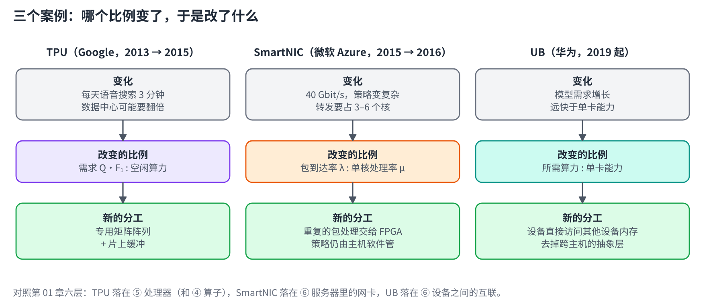
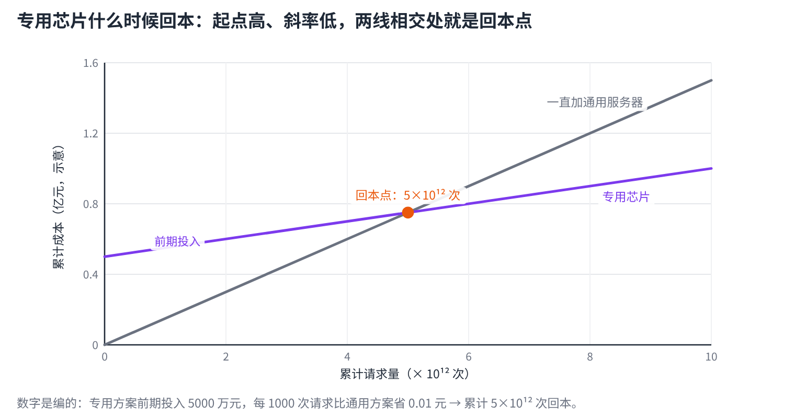
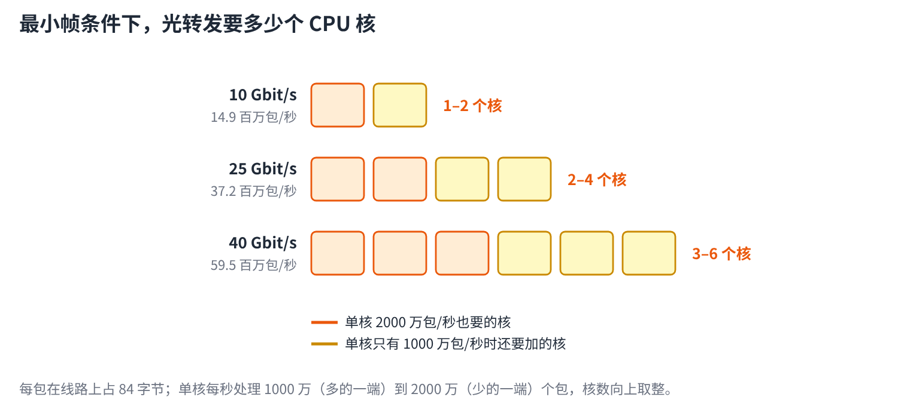

第 06 章 · 需求如何推动架构：TPU、SmartNIC、Unified Bus
本地运行
git clone https://github.com/wikieden/ai-infra-from-constraints
cd ai-infra-from-constraints/code/notebooks
pip install jupyterlab torch numpy
jupyter lab ch06_architecture.ipynb也可以下载后直接用 VS Code 打开 .ipynb 运行。需要 GPU 的章节在 Colab 里选「代码执行程序 → 更改运行时类型 → GPU」。
本章回答：硬件为什么会长成现在的样子？Google 为什么要自己造 TPU，微软为什么把网络处理搬到网卡上，华为为什么要做统一互联？这些设计背后有没有一个共同的规律？
讲解日期：2026-11-24 · 上一章：第 05 章 用几个数字估算一次模型执行 · 下一章：第 07 章 计算图与张量结构（待写）
对应原文：materials/ai-infra-book/manuscripts/01-初识 AI Infra.md§1.4 L367–L443（图 1-15 到 1-17，逐级传递表 L427–L436）、"谬误与陷阱" L444–L454
本章缩写：CPU = Central Processing Unit（中央 / 处理 / 单元）· FPGA = Field-Programmable Gate Array（现场 / 可编程 / 门阵列：部署以后还能改硬件逻辑的芯片）· KV = Key-Value（键 / 值）· NIC = Network Interface Card（网络 / 接口 / 卡）· PCIe = Peripheral Component Interconnect Express（外设 / 部件 / 互联 / 高速版）· RL = Reinforcement Learning（强化 / 学习）· SmartNIC = Smart Network Interface Card（智能 / 网卡）· TPU = Tensor Processing Unit（张量 / 处理 / 单元）· UB = Unified Bus（统一 / 总线，华为的统一互联）。全部缩写见 缩写与术语表
第 02–05 章把硬件当成给定条件来估算。本章反过来问：这些硬件本身是怎么来的？
讲解
第一步：推动架构变化的，是比例（2026-11-24）
类比：一家小饭馆。 一天 20 个客人时，老板一个人又炒菜又收钱正合适。客人涨到 500 个，收钱开始占掉老板一半的时间，这时专门请一个收银员就划算了。不是收钱这件事变了，而是"收钱时间 : 炒菜时间"这个比例变了。
原文 L369：推动架构变化的因素有两类，最后都体现为比例的改变。
| 变化 | 例子 | 改变了哪个比例 |
|---|---|---|
| 需求变化 | 业务规模扩大、出现新负载 | 需求增长 : 单芯片能力 |
| 硬件变化 | 某类器件的性能提升快于其他器件 | 带宽 : 处理能力；计算量 : 数据读取量 |
比例一变，原来合理的分工就可能不再合算。本章三个案例：

图 6-1 · 三个案例分别落在第 01 章六层的不同位置：TPU 改处理器，SmartNIC 改服务器里的网卡，UB 改设备之间的互联。
一句话：架构跟着比例走；比例变了，原来合理的分工就要重新划分。
第二步：TPU：语音搜索的需求让数据中心要翻倍（2026-11-24）
类比：一个城市的人口快速增长，原来的公交跑不过来。 一直加公交车也行，但如果客流大到一定程度，修一条地铁虽然前期投入大，算下来每位乘客更便宜。
原文 L373：Google 很早就讨论过 GPU、FPGA 或专用芯片，但早期数据中心的空闲资源够用。2013 年的一项预测改变了讨论：如果每位用户每天用三分钟语音搜索，数据中心规模可能要翻倍。于是 Google 推进专用推理芯片，TPU v1 于 2015 年部署，2017 年发表论文。
公式（原文 L375）：
- \(Q\)：每天的请求量；\(F_1\)：每个请求要的计算量（下标 1 = 单个请求）。
- \(Q\) 一直涨，现有设备的空闲能力迟早用完。这时可以加通用服务器，也可以做专用芯片：后者有一笔前期开发成本，但每个请求花的设备时间和能耗更少。规模越大，越容易回本。
例子（数字是编的，只为演示"回本"怎么算）：专用芯片前期投入 5000 万元，每 1000 次请求比通用服务器省 0.01 元。
一天 \(10^{10}\) 次请求，要 500 天回本；一天 \(10^{11}\) 次，只要 50 天。

图 6-2 · 横轴是累计请求量。通用方案从零开始按单价增长；专用方案起点高、斜率低，两线交点就是回本点（数字是编的）。
专用芯片怎么设计（原文 L377）：为反复出现的矩阵运算配更多计算单元，用片上缓冲和数据通路给它们喂数据（第 03 章的"把复用写进执行结构"）。原书第 4 章会讲 TPU 的矩阵阵列。
一句话：需求 \(QF_1\) 涨到接近数据中心的空闲算力时，一次性投入的专用芯片就可能比一直加通用服务器更合算。
第三步：SmartNIC：网速涨了，CPU 处理包的速度没跟上（2026-11-24）
类比：快递站。 每天的包裹从 1000 件涨到 6000 件，分拣员一个人每天只能分 1500 件，就得配 4 个分拣员，他们本来可以去做别的事。换一台自动分拣机，把重复的分拣交给机器，人只管规则（比如哪些片区改了地址）。
原文 L387–L397：微软 Azure 2015 年设计 40 Gbit/s 的新一代云服务器时，网络带宽变高，虚拟网络策略（隔离、转发、访问控制）也越来越复杂。这些包处理都占着 CPU 核，而 CPU 核本该留给租户的应用。
公式（原文 L394）：
- \(\lambda_{\mathrm{packet}}\)（读作 lambda）：每秒到达多少个包；\(\mu_{\mathrm{core}}\)（读作 mu）：一个核每秒能处理多少个包。
- 链路带宽变大，\(\lambda\) 跟着变大；\(\mu\) 没同步提高，要的核数就随两者之比增加。
例子（原文 L391 与脚注 L490）：最小以太网帧在线路上占 84 字节（64 字节帧 + 前导码和帧间隔）。
单核每秒处理一千万到两千万个包，要 \(59.5 / 20 \approx 3\) 到 \(59.5 / 10 \approx 6\) 个核，只用来转发。

图 6-3 · 最小帧条件下，不同链路速率要多少个核来转发（单核 1000 万–2000 万包/秒）。
Azure 的做法：2015 年末起在新服务器上装基于 FPGA 的 SmartNIC，2016 年推出 Accelerated Networking（加速网络）。复杂策略由主机软件管理，适合重复执行的包处理规则交给 FPGA；FPGA 还能重新配置，策略更新时跟着改。
代价：网卡如果要用主机内存里的数据，就得经过 PCIe 读，这时返回延迟和能同时发出的请求数决定了速度（原书第 7 章用 KV-Direct 分析）。
一句话：网速涨得比 CPU 处理包的速度快，要的核数随之上涨；把重复的包处理交给可编程网卡，CPU 留给应用，软件仍管策略。
第四步：Unified Bus：卡多了，连接卡的活也多了（2026-11-24）
类比：一个项目组从 3 个人扩到 300 个人。 人多了，能干的活多了，但开会、交接、等别人的结果也多了。如果每次找另一个组的人都要先写邮件、再走审批、再排会议，效率就被这些"层"吃掉了；最好的办法是能直接找到人、直接拿到东西。
原文 L409–L415：
- 单个加速器装不下模型和运行状态时，最直接的办法是加卡。但"总容量够了"和"能高效执行"之间，还隔着工作划分、数据交换和同步（第 02 章：多卡实例要传中间结果）。
- 模型训练的算力需求增长远快于单个加速器能力的提升，两者之比越来越大，协同的卡只能越来越多。
- 数据一旦跨过主机边界，软件要改用消息传递接口、重新安排缓冲区，再经过网卡驱动和协议栈，每多一层抽象就多一段时间。
- 华为面向昇腾等异构设备推进 UB（Unified Bus，统一互联）：让设备直接访问其他设备的内存，去掉这些抽象层，让一次远程访问的耗时逼近线路时延决定的下限（原书 6.5.5、7.3、7.4 节展开）。
分析顺序（原文 L421）：卡再多，都按这三步。
| 步 | 问什么 | 对应前面哪章 |
|---|---|---|
| 1 | 每张卡能不能放下它要的数据（\(M \le M_{\mathrm{cap}}\)，逐卡算） | 第 04 章 |
| 2 | 每张卡要算多少、读写多少 | 第 05 章 |
| 3 | 按执行依赖，谁要等谁，总时间多少 | 第 05 章的 \(\max\) 和第 02 章的卡间传递 |
一句话：加卡带来了容量和算力，也带来了通信和等待；UB 的思路是去掉跨设备访问的软件抽象层，让远程访问接近线路本身的速度。
第五步：变化会逐级传递；老办法在新比例下又合算了（2026-11-24）
类比：城市修了地铁以后，地铁站周围的商铺、停车场、公交线路都要跟着重新规划。 一个设计部署以后，又带来新的约束。
原文 L425：FPGA 上了 Azure，云平台就得负责 FPGA 逻辑的更新和故障处理；UB 把大量加速器连成一体，每次同步要等的设备更多，可能出错的部件也更多。AI 系统里的逐级传递（原文 L427–L436，按原书章节顺序）：
| 变化 | 不再成立的假设 | 原书章节 |
|---|---|---|
| 神经网络的执行时间集中在矩阵运算 | 通用处理器能以合理的面积和功耗完成主要计算 | 第 4、5 章 |
| 模型权重超过单卡显存 | 一个模型可以放在一张卡上 | 第 6 章 |
| 训练与推理跨多台服务器同步执行 | 网络流量来自互相独立的数据流，可以统计复用 | 第 7 章 |
| decode 每读一遍权重只做少量计算 | 峰值算力决定执行速度 | 第 8 章 |
| 上下文变长，KV 接近甚至超过权重 | 上下文状态很小，可以随时重算 | 第 9 章 |
| 训练规模达到上千张卡 | 故障是偶发事件 | 第 10 章 |
| Agent 与 RL 负载成批创建工具环境 | 容器里的程序互相独立，各自决定运行节奏 | 第 11 章 |
| 端侧设备能运行模型 | 计算集中到云端总能缩短完成时间 | 第 12 章 |
第四行就是第 05 章算出来的事：读权重比算慢 148 倍，峰值算力不决定速度。
AI 系统的一个有利条件（原文 L438）：负载种类少，而且事先已知。通用平台要跑不知道是什么的程序，只能靠统一的抽象、严格的隔离和统计复用；AI 系统围绕少数模型和确定的执行过程设计，可以提前知道计算和数据依赖，据此打破原有的抽象边界。
老办法又合算了（原文 L440）：
| 原书章节 | 用到的老办法 | 出处 |
|---|---|---|
| 第 8 章 KV 分页管理 | 操作系统的分页 | 操作系统 |
| 第 11 章 沙箱放置 | power-of-k-choices 随机选择 | Mitzenmacher，2001 |
| 第 11 章 虚拟机内存回收 | balloon 机制 | Waldspurger，2002 |
比例变了以后，原先不划算或用不上的方法又变得合算。
全书主线（原文 L442）：数据搬移塑造了 AI Infra 的架构。 三条线索贯穿后面各章：比例的变化解释为什么需要新设计，数据搬移说明新设计改了什么，物理极限（第 05 章第五步）衡量设计做到了什么程度。
一句话：一个设计部署后会带来新约束，变化沿着系统一层层传下去；一项技术合不合用，要按当前的比例重新算。
第六步：五个常见误区（2026-11-24）
原文"谬误与陷阱"L444–L454，正好把第 02–06 章串起来复习一遍：
| 误区 | 为什么错 | 回看 |
|---|---|---|
| 峰值算力翻倍，执行速度就翻倍 | 先看当前是不是受算力限制；单请求 decode 是读取说了算，算力翻倍几乎不改变下界；只加速一部分还要用 Amdahl 定律检查上限 | 第 04 章第二步、第 05 章第二步 |
| 显存放得下权重，就能支持目标并发数 | 权重只是常驻数据的一部分，KV、工作区、运行时预留都占显存；多卡还要逐卡算 | 第 04 章第四步 |
| 比旧实现快了三成，优化就算成功 | 不知道极限，就不知道三成是逼近上限还是离上限还有一个数量级；先算极限，再查差距来自漏项还是开销 | 第 05 章第五步 |
| 上一代场景里成熟的系统，可以直接用于新负载 | 每种设计都以设计时的比例为前提；通用容器平台假定租户互相独立，RL 沙箱却成批创建、节奏由 GPU 决定，照搬会让加速器空等 | 本章第五步 |
| 吞吐提高了，每个用户的等待就缩短了 | 批内复用减少的是每个输出分摊的读取，每个请求仍要排队、等整批算完；吞吐和响应时间要同时报告 | 第 05 章第三步 |
一句话：五个误区背后是同一个习惯：先算清楚是谁在限制速度、比例是多少，再动手。
动画演示：网速越高，光转发就要越多 CPU 核

可交互版：animations/06-architecture.html（两个滑块：链路速率 10 / 25 / 40 / 400 Gbit/s，单核处理能力 1000 万–2000 万包/秒）。
怎么看：
- 左边是到达的包流，速率 \(\lambda\) = 链路速率 ÷（84 字节 × 8）（第三步）；
- 中间一排 CPU 核，被占用的核亮起来：\(n = \lambda / \mu\)，向上取整；
- 播放时链路速率从 10 Gbit/s 涨到 40 Gbit/s，亮的核越来越多；
- 最后一帧把包处理交给 SmartNIC，CPU 核全部还给应用。
练习与作答记录
题 1（第三步）：链路升级到 100 Gbit/s，仍按最小帧（每包在线路上占 84 字节）算，单核每秒处理 1500 万个包。每秒到达多少个包？光转发要几个核？
作答记录：（待作答）
题 2（第二步）：一款专用推理芯片前期要投入 2 亿元，每 1000 次请求比通用服务器省 0.04 元。累计多少次请求才能回本？每天 \(2 \times 10^{10}\) 次请求的话，要多少天？
作答记录：（待作答）
题 3（第五步）：MoE 模型的专家数从 8 个涨到 256 个，每个 token 只激活其中 8 个。参照逐级传递表的写法，说说这个变化可能让哪个原来的假设不再成立？会影响到第 01 章六层里的哪几层？（开放题，说出理由即可。）
作答记录：（待作答）
口诀
比例一变，分工重排；
需求翻倍造专芯，回本看规模；
网速涨了核不够，包处理交给网卡；
卡多了先算容量，再算读写，最后看谁在等；
老办法新比例，数据搬移定架构。
本章复习卡片
I19（架构跟着比例走）、I20（SmartNIC 的核数公式）、I21（多卡分析的三步顺序）、I22（五个常见误区）。练习做完后，按答错、卡住的地方再补。
附录 · 延伸阅读
留给以后深入学习用，不影响本章主线。★ 是建议先读的。
推荐阅读
| 读什么 | 读哪里 | 读它为了什么 |
|---|---|---|
| ★ AII 第 1 章 | §1.4 L367–L443、谬误与陷阱 L444–L454 | 本章原文，图 1-15 到 1-17 |
| ★ Jouppi 等，TPU v1 论文（ISCA 2017） | 第 2 节 起源、架构与实现（原文脚注 L488） | 三分钟语音搜索的需求预测，专用芯片的设计取舍 |
| ★ Firestone 等，Azure Accelerated Networking: SmartNICs in the Public Cloud（NSDI 2018） | 摘要、第 3 节（原文脚注 L500） | 为什么用 FPGA，怎么兼顾可编程和速度 |
| 李博杰博士论文 | 第 4.2.1 节简单转发基线（原文脚注 L490） | 六千万包每秒和 3–6 个核的来历 |
| Mitzenmacher, The Power of Two Choices in Randomized Load Balancing（IEEE TPDS 2001） | 全文 | power-of-k-choices（原书第 11 章用到） |
| Waldspurger, Memory Resource Management in VMware ESX Server（OSDI 2002） | balloon 机制一节 | 虚拟机内存回收（原书第 11 章用到） |
数学原理
- 回本点：通用方案总成本 = 单价 × 请求数；专用方案 = 前期投入 + 更低单价 × 请求数。两条直线相交处：请求数 = 前期投入 ÷ 每次省下的钱。
- 排队里的到达率与服务率：\(\lambda\) 是到达率，\(\mu\) 是服务率；要跟上到达，服务者数量至少 \(\lambda/\mu\)（向上取整）。
- 线速包率：包率 = 链路比特率 ÷（每包线路字节数 × 8）。
公式清单
| 公式 | 意思 |
|---|---|
| 每日需求 \(= Q F_1\) | 请求量 × 每请求计算量 |
| 回本请求数 \(=\) 前期投入 \(/\) 每次节省 | 专用芯片什么时候合算 |
| \(\lambda = \text{bit/s} / (84 \times 8)\) | 最小帧条件下的包率 |
| \(n_{\mathrm{core}} = \lambda / \mu\) | 光转发要几个核 |
代码对照：把本章的数字用代码算一遍
纯 Python，不需要 GPU。代码在仓库本地
ai-infra/solutions/chapter-code/ch06_architecture.py，配套测试tests/test_ch06.py：
bash cd ai-infra/solutions/chapter-code uv run python ch06_architecture.py # 一步一步打印 uv run pytest tests/test_ch06.py
讲义 ↔ 代码：
| 讲义 | 公式 | 写法 | 跑出来 |
|---|---|---|---|
| 第二步 回本点（编的数） | 投入 ÷ 每次节省 | breakeven(5e7, 0.01 / 1000) |
\(5 \times 10^{12}\) 次 |
| 第二步 要多少天 | 回本数 ÷ 每天请求 | days_to_breakeven(5e7, 0.01 / 1000, 1e10) |
500 天；每天 \(10^{11}\) 次是 50 天 |
| 第三步 40 Gbit/s 的包率 | \(40 \times 10^9 / 672\) | packet_rate(40) |
约 5950 万包/秒 |
| 第三步 要几个核 | \(\lambda / \mu\) | cores(packet_rate(40), 2e7)、cores(…, 1e7) |
3 到 6 个 |
关键几行：
def packet_rate(gbps, wire_bytes=84):
return gbps * 1e9 / (wire_bytes * 8) # 每包在线路上占 84 字节 = 672 bit
def cores(rate, per_core):
return math.ceil(rate / per_core) # 核只能整个整个地给，向上取整
代码里才看得到的 3 件事：
- 84 字节不是以太网帧本身（最小 64 字节），而是加上前导码和帧间隔以后在线路上占的长度；用 64 字节算，包率会高估约 30%。
cores向上取整：5.95 个核实际要 6 个；原文写"3–6"是按单核 2000 万和 1000 万两头算的（2.98 → 3，5.95 → 6）。- 回本的例子里，"每 1000 次省 0.01 元"要先换成每次省 \(10^{-5}\) 元再除，单位不统一很容易差三个数量级。
自己改一改（不影响练习答案）：
- 把
packet_rate的帧长从 84 改成 1538（最大帧在线路上的长度），看要几个核。 - 把回本例子的前期投入翻倍，看每天 \(10^{10}\) 次请求要多少天。
- 把单核处理能力提高到 5000 万包/秒，40 Gbit/s 还要几个核？